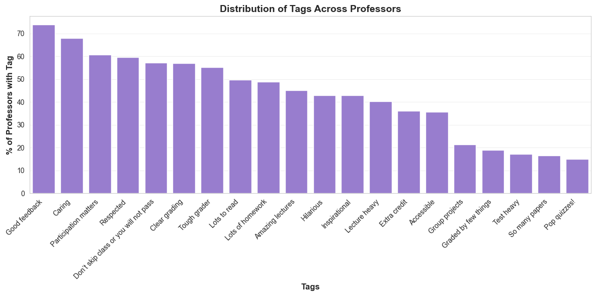
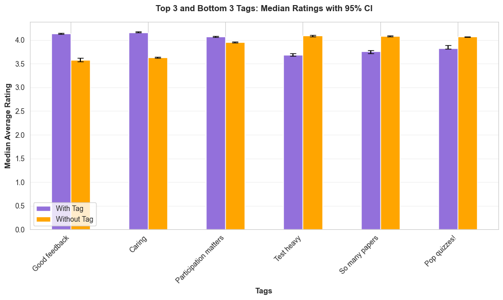
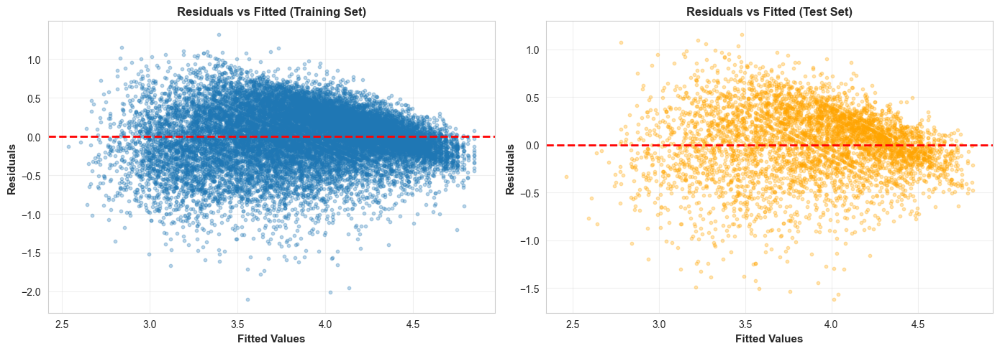
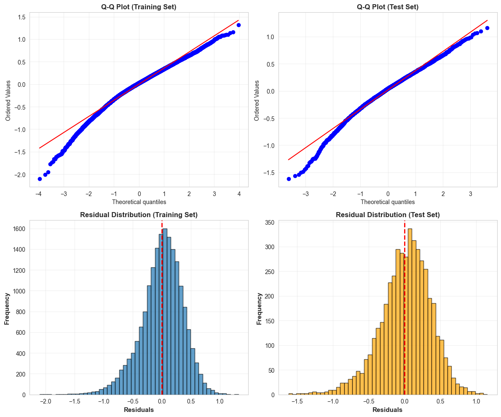

import pandas as pd
import numpy as np
import matplotlib.pyplot as plt
import seaborn as snsRate My Professor Analysis
Author: Rutuja Jadhav | Published: Dec 2025
🌐 Website | 💼 LinkedIn | 🐱 GitHub
About this Project
This analysis was developed as part of my capstone project for the DSGA1001 course on the MS in Data Science program at NYU’s Courant Institute of Mathematics, Computing and Data Science. The original submission is a comprehensive investigation into patterns behind professor ratings on a website called Rate My Professor (where my own DS Prof happens to have a stellar rating, might I add) . We were provided a bunch of data sets pulled from the website and a set of research questions to explore.
What you’ll find here
Rather than presenting the entire capstone (which is quite lengthy and probably still being used to assess the newer cohorts), I have curated only the most interesting methodologies to showcase my analytical approach and key learnings.
While the findings themselves might not revolutionize how we think about professor ratings, this project showcases something I value more: methodological rigor when the data doesn’t cooperate.
Real-world data is messy. This analysis forced me to navigate: - Sparse data challenges — working with limited tags in certain categories - Non-standard distributions — when your data violates assumptions, you adapt - Edge cases — bending traditional techniques when textbook approaches fall short
The focus here isn’t groundbreaking discoveries — it’s demonstrating how the course taught me to think through analytical obstacles. How do you extract reliable insights when the data isn’t perfect? When do you choose a non-parametric test over the standard approach? How do you communicate uncertainty honestly while still providing value and defending your choices?
These are the skills that matter in real data science work, and that’s what I want to highlight in this portfolio piece.
Research questions covered in this presentation
Preliminary data expolration + advanced data transformation Introducing the datasets with some basic hygiene checks such as shape, size and type of data. This is followed by two advanced transformations, namely Bayesian Shrinakge (chapter 2), and Feature transformation from numerical to binary (chapter 4).
Non Parametric Hypothesis Testing Is there is a gender bias between the average professor ratings of male and female professors? Contextualising the results with effect sizes and confidence interval with bootstrapping to determine practical significance.
Linear Regression Modelling with Lasso Regularisation Predicting a professor’s average rating based on certain behavioural features available in the dataset and validating the various assumptions for linear regression.
Chapter 1: Introducing the Dataset
Out of all the data provided to us from Rate My Professor, two .csv files were used for the analysis presented in this post.
The first file contained more definitive information which is available for all professors on RMP - i.,e average rating, average difficulty, gender, number of ratings, etc.
The second file contained behavioural tags which the students mark a professor with - this is optional and students can choose atmost 3 tags (out of 20) for any given professor. Examples of tags include - ‘inspirational’, ‘tough grader’, ‘respected’. etc.
1.1. Data cleaning
Both the dataframes had 89,892 rows where rach row represents the data associated with a single professor.
At this stage the column labels in the raw data were ambiguous so I re-lablled these based on the information provided to us in the spec sheet in class.
Then I merged both the dataframes into a single object to simplify further analysis.
# Load the datasets
av_ratings_df = pd.read_csv("../rmpCapstoneNum.csv")
df_tags = pd.read_csv("../rmpCapstoneTags.csv")
print(av_ratings_df.shape)
print("Unformatted file containing with ambiguous column names numerical data - firs column '5' shows average ratings")
av_ratings_df.head()(89892, 8)
Unformatted file containing with ambiguous column names numerical data - firs column '5' shows average ratings| 5 | 1.5 | 2 | 0 | NaN | 0.1 | 0.2 | 1 | |
|---|---|---|---|---|---|---|---|---|
| 0 | NaN | NaN | NaN | NaN | NaN | NaN | 0 | 0 |
| 1 | 3.2 | 3.0 | 4.0 | 0.0 | NaN | 0.0 | 1 | 0 |
| 2 | 3.6 | 3.5 | 10.0 | 1.0 | NaN | 0.0 | 0 | 0 |
| 3 | 1.0 | 5.0 | 1.0 | 0.0 | NaN | 0.0 | 0 | 0 |
| 4 | 3.5 | 3.3 | 22.0 | 0.0 | 56.0 | 7.0 | 1 | 0 |
print(df_tags.shape)
df_tags.head()(89892, 20)| 0 | 0.1 | 0.2 | 0.3 | 0.4 | 1 | 0.5 | 0.6 | 0.7 | 0.8 | 0.9 | 0.10 | 0.11 | 0.12 | 0.13 | 0.14 | 0.15 | 0.16 | 0.17 | 1.1 | |
|---|---|---|---|---|---|---|---|---|---|---|---|---|---|---|---|---|---|---|---|---|
| 0 | 0 | 0 | 0 | 0 | 0 | 0 | 0 | 0 | 0 | 0 | 0 | 0 | 0 | 0 | 0 | 0 | 0 | 0 | 0 | 0 |
| 1 | 2 | 1 | 2 | 1 | 0 | 4 | 2 | 0 | 0 | 0 | 0 | 0 | 0 | 0 | 0 | 0 | 0 | 0 | 0 | 0 |
| 2 | 6 | 3 | 0 | 0 | 2 | 4 | 2 | 1 | 0 | 0 | 0 | 2 | 1 | 0 | 0 | 0 | 0 | 0 | 1 | 0 |
| 3 | 0 | 0 | 0 | 0 | 0 | 0 | 0 | 0 | 0 | 0 | 0 | 0 | 0 | 0 | 0 | 0 | 0 | 0 | 0 | 0 |
| 4 | 8 | 13 | 1 | 3 | 2 | 3 | 2 | 1 | 0 | 3 | 0 | 7 | 3 | 0 | 0 | 0 | 3 | 0 | 1 | 3 |
# Rename columns
av_ratings_df.columns = [
"Average Rating",
"Average Difficulty",
"Number of ratings",
"Hot or Not",
"Take class again",
"Online class ratings",
"Male",
"Female"
]
# Display head only
av_ratings_df.head()# Merge by concatenating columns
merged_df = pd.concat([av_ratings_df, tags_df], axis=1)
# Check the result
print(merged_df.shape)
print("\n Merged and re-labelled dataframe for analysis")
merged_df.head()(89892, 28)
Merged and re-labelled dataframe for analysis| Average Rating | Average Difficulty | Number of ratings | Hot or Not | Take class again | Online class ratings | Male | Female | Tough grader | Good feedback | ... | So many papers | Clear grading | Hilarious | Test heavy | Graded by few things | Amazing lectures | Caring | Extra credit | Group projects | Lecture heavy | |
|---|---|---|---|---|---|---|---|---|---|---|---|---|---|---|---|---|---|---|---|---|---|
| 0 | NaN | NaN | NaN | NaN | NaN | NaN | 0 | 0 | 0 | 0 | ... | 0 | 0 | 0 | 0 | 0 | 0 | 0 | 0 | 0 | 0 |
| 1 | 3.2 | 3.0 | 4.0 | 0.0 | NaN | 0.0 | 1 | 0 | 2 | 1 | ... | 0 | 0 | 0 | 0 | 0 | 0 | 0 | 0 | 0 | 0 |
| 2 | 3.6 | 3.5 | 10.0 | 1.0 | NaN | 0.0 | 0 | 0 | 6 | 3 | ... | 0 | 2 | 1 | 0 | 0 | 0 | 0 | 0 | 1 | 0 |
| 3 | 1.0 | 5.0 | 1.0 | 0.0 | NaN | 0.0 | 0 | 0 | 0 | 0 | ... | 0 | 0 | 0 | 0 | 0 | 0 | 0 | 0 | 0 | 0 |
| 4 | 3.5 | 3.3 | 22.0 | 0.0 | 56.0 | 7.0 | 1 | 0 | 8 | 13 | ... | 0 | 7 | 3 | 0 | 0 | 0 | 3 | 0 | 1 | 3 |
5 rows × 28 columns
merged_df.describe()| Average Rating | Average Difficulty | Number of ratings | Hot or Not | Take class again | Online class ratings | Male | Female | Tough grader | Good feedback | ... | So many papers | Clear grading | Hilarious | Test heavy | Graded by few things | Amazing lectures | Caring | Extra credit | Group projects | Lecture heavy | |
|---|---|---|---|---|---|---|---|---|---|---|---|---|---|---|---|---|---|---|---|---|---|
| count | 70003.000000 | 70003.000000 | 70003.000000 | 70003.000000 | 12160.000000 | 70003.000000 | 89892.000000 | 89892.000000 | 89892.000000 | 89892.000000 | ... | 89892.000000 | 89892.000000 | 89892.000000 | 89892.000000 | 89892.000000 | 89892.000000 | 89892.000000 | 89892.000000 | 89892.000000 | 89892.000000 |
| mean | 3.807997 | 2.864643 | 5.374770 | 0.279931 | 76.417105 | 0.315615 | 0.326792 | 0.301896 | 0.753771 | 1.004617 | ... | 0.112969 | 0.550794 | 0.498732 | 0.126196 | 0.118142 | 0.483769 | 0.855738 | 0.402672 | 0.204201 | 0.394918 |
| std | 1.126894 | 0.991057 | 8.136676 | 0.448968 | 25.011441 | 1.054735 | 0.469043 | 0.459083 | 1.985597 | 2.485242 | ... | 0.550806 | 1.464692 | 2.063500 | 0.693773 | 0.501118 | 1.807557 | 2.158979 | 1.660904 | 0.949807 | 1.189550 |
| min | 1.000000 | 1.000000 | 1.000000 | 0.000000 | 4.000000 | 0.000000 | 0.000000 | 0.000000 | 0.000000 | 0.000000 | ... | 0.000000 | 0.000000 | 0.000000 | 0.000000 | 0.000000 | 0.000000 | 0.000000 | 0.000000 | 0.000000 | 0.000000 |
| 25% | 3.000000 | 2.000000 | 1.000000 | 0.000000 | 60.000000 | 0.000000 | 0.000000 | 0.000000 | 0.000000 | 0.000000 | ... | 0.000000 | 0.000000 | 0.000000 | 0.000000 | 0.000000 | 0.000000 | 0.000000 | 0.000000 | 0.000000 | 0.000000 |
| 50% | 4.000000 | 3.000000 | 3.000000 | 0.000000 | 83.000000 | 0.000000 | 0.000000 | 0.000000 | 0.000000 | 0.000000 | ... | 0.000000 | 0.000000 | 0.000000 | 0.000000 | 0.000000 | 0.000000 | 0.000000 | 0.000000 | 0.000000 | 0.000000 |
| 75% | 4.800000 | 3.500000 | 6.000000 | 1.000000 | 100.000000 | 0.000000 | 1.000000 | 1.000000 | 1.000000 | 1.000000 | ... | 0.000000 | 1.000000 | 0.000000 | 0.000000 | 0.000000 | 0.000000 | 1.000000 | 0.000000 | 0.000000 | 0.000000 |
| max | 5.000000 | 5.000000 | 393.000000 | 1.000000 | 100.000000 | 19.000000 | 1.000000 | 1.000000 | 112.000000 | 171.000000 | ... | 64.000000 | 77.000000 | 224.000000 | 81.000000 | 39.000000 | 136.000000 | 127.000000 | 128.000000 | 92.000000 | 38.000000 |
8 rows × 28 columns
merged_df.info()<class 'pandas.core.frame.DataFrame'>
RangeIndex: 89892 entries, 0 to 89891
Data columns (total 28 columns):
# Column Non-Null Count Dtype
--- ------ -------------- -----
0 Average Rating 70003 non-null float64
1 Average Difficulty 70003 non-null float64
2 Number of ratings 70003 non-null float64
3 Hot or Not 70003 non-null float64
4 Take class again 12160 non-null float64
5 Online class ratings 70003 non-null float64
6 Male 89892 non-null int64
7 Female 89892 non-null int64
8 Tough grader 89892 non-null int64
9 Good feedback 89892 non-null int64
10 Respected 89892 non-null int64
11 Lots to read 89892 non-null int64
12 Participation matters 89892 non-null int64
13 Don’t skip class or you will not pass 89892 non-null int64
14 Lots of homework 89892 non-null int64
15 Inspirational 89892 non-null int64
16 Pop quizzes! 89892 non-null int64
17 Accessible 89892 non-null int64
18 So many papers 89892 non-null int64
19 Clear grading 89892 non-null int64
20 Hilarious 89892 non-null int64
21 Test heavy 89892 non-null int64
22 Graded by few things 89892 non-null int64
23 Amazing lectures 89892 non-null int64
24 Caring 89892 non-null int64
25 Extra credit 89892 non-null int64
26 Group projects 89892 non-null int64
27 Lecture heavy 89892 non-null int64
dtypes: float64(6), int64(22)
memory usage: 19.2 MB1.2. Null Values
Out of approx. 89000 records, around 19000 rows were dropped because they lacked the variable of interest - average ratings. I avoided imputation as the missing values were not missing at random and imputing could introduce bias.
#dont delete cell
# Drop rows without ratings data from merged_df (modifies in place)
merged_df.dropna(subset=['Average Rating', 'Number of ratings'], inplace=True)
merged_df.shape(70003, 28)Chapter 2: EDA - Not all Averages are created Equal
Using Bayesian Shrinkage to improve the reliability of Average Ratings.
The variable of interest for the research questions addressed in this presentation is Average Ratings.
Each professor has an average rating between 1-5, given by some ‘N’ number of students (more on this later).
At first glance, professor ratings seem overly generous. Half of all professors scored above 4.0 on a 5-point scale.

Average ratings are bunched up near the top, with a long tail stretching toward the lower end - a classic left-skewed distribution.
2.1. Why the Skew? A ‘Cardinal’ Problem
Before we close in on the beef of our analysis(ie the hypothesis testing, regression, etc), we need to acknowledge something fundamental: Rating scales aren’t the most numerically accurate of all measurement instruments.
Ratings data is oblivious to one of the holy trinity of numerical properties - cardinality (it is largely ordinal and to some extent nominal as well).
The psychological difference between a 3 and a 4 isn’t the same as between a 4 and a 5 in students’ minds (contrary to to the mathematical distance between the two pairs).
This creates two structural issues:
Scale Psychology: Students don’t use the scale evenly. Some may mentally treat 5 = Excellent, 4 = Good/Acceptable, 3 = Disappointing (not “average”), 1-2 = Terrible whislt others may treat 5 = Excellent, 4 = Very Good, 3 = Average or Acceprable, 2= Terrible , 1= Do I even need to bother rating? The mathematical midpoint (3.0) becomes a psychological “failure,” for some and “neutrality” for others.
Ceiling effect: On a bounded 1-5 scale, there’s limited room at the top. A truly exceptional professor can’t score higher than 5, compressing all “great” professors into a narrow band. Whereas those with an average rating < 4, have more room to spread out.
These aren’t data problems we can fix - they’re structural limitations of the rating scale itself.
2.2. Could the Average Ratings be skewed due to Selection Bias?
Another afterthought: maybe only satisfied students bother rating, filtering out negative experiences entirely. If bad or unpopular professors simply don’t get rated, this dataset might only capture “survivors.”
Let us check how many students typically rate each professor:

On average, professors were rated by 5 students (std deviation = 8)
Half the profs have been rated by only 3 students (the median). The interquartile range for ‘Number of Ratings’ sits around 6-10 ratings per professor. This is universally sparse.
But here’s what’s interesting: when run a medial split professors by average rating, both groups look somewhat identical:
-Professors with Average Rating > 4:
Mean number of ratings: 5.7
Median number of ratings: 3.0
-Professors with Average Rating ≤ 4:
Mean number of ratings: 5.1
Median number of rating ratings: 3.0
This suggests low-ranked professors aren’t being ignored - they’re just as under-reviewed as everyone else
While some form of selection or surviorship bias may exist for the popular or tenure professors, but it’s not completely filtering out low-rated professors from the dataset. They’re here - they just have tiny, unreliable sample sizes.
2.3. Does More Data Fix the Skew?
I wondered: maybe the skew is just noise from small samples (small samples = less number of students rating a professor). What if we only look at professors with substantial rating histories?

Not only does more data NOT FIX the skew, in fact, it enhances it with larger samples. But something else happens:
n ≥ 10: Median rating = 4.0
n ≥ 30: Median rating = 4.3
n ≥ 100: Median rating = 4.6
Professors with more ratings trend higher. This could mean:
The median rating increases from 4 for all professors to 4.3–4.65 among those with more than 100 ratings, reflecting both reduced variability from larger sample sizes and the tendency for more widely taught or popular professors to accumulate more ratings. (This signals some level of mild selection/ surviorship bias filtering out the low-ranked professors. If low-rank professors were equally represented, the median wouldn’t rise as we increased n, it would shift left-ward).
Despite this, however, the left-skewed shape persists, indicating that ceiling effects and asymmetric scale usage remain the primary drivers of the skew.
But here’s the problem: only a handful of professors have 100+ ratings. The vast majority are stuck with 1-10 reviews - too few to be reliable.
2.4. In Summary: The Real Problem
We have two separate issues:
1. The skew - Ratings trend positive due to scale psychology, ceiling effects, and possibly mild selection bias
2. Unreliable sample sizes - The bulk of ratings are based on 5 reviews or fewer.
We can’t fix issue #1 (it’s baked into how rating scales work). But we can fix issue #2!
2.5. Not all Averages are created Equal
Here’s a thought experiment: Would you trust a restaurant with a single 5-star review, or one with 500 reviews averaging 4.8?
Hopefully you said the second one. Sample size matters.
A professor with a single enthusiastic freshman can have a 5.0 average. A single disgruntled student can create a 1.0. With only 3 median reviews, average ratings are unstable.

Notice how ratings jump around wildly when sample sizes are small? The variance is extreme at the low end.
Therefore average ratings for professors who were reviewed by a smaller number of students may not be the most representative of the entire population of students who took that professor’s class.
As rule of thumb originating from the Central Limit Theorem and Law of Large numbers, we need typically require a sample size of n>= 30 in order for any average to reliabily reflect the true population’s sentiment and reduce sampling variation.
2.6. Bayesian Shrinkage Adjustment for Professor Ratings
As seen in chapter 1, restricting the analysis to professors with many ratings would leave us to work with only a fraction of the dataset (example n>30 gives only 992 profs). While those ratings are more reliable, such filtering risks amplifying the selection bias by overrepresenting popular professors. On the other hand, analysing ALL ratings based on reviews from a handful of students, introduces substantial sampling variability.
To address this tradeoff, I applied a Bayesian shrinkage estimator to professor-level average ratings and difficulty scores. (Note - Let’s not get thrown off the guard with ‘Bayesian’ in that title. It just refelects an ‘update’. The ultimate approach of hypohtesis testing in subsequent chapters still remains very much Frquentist.)
The purpose of the Bayesian shrinkage estimator is to stablise average ratings by shrinking noisy, low-sample averages toward a global mean, while leaving high-sample averages largely unchanged.
Intuitively, a rating of 4.8 based on 5 students is pulled slightly downward toward the global mean, while a rating of 1.2 based on 5 students is pulled upward toward the same mean.
2.7. Computing the Bayesian-adjusted Average Ratings
The Bayesian-adjusted rating for professor \(i\) is:
\[ \text{AdjustedRating}_i = \frac{n_i \, \bar{x}_i + k \, \mu}{n_i + k} \]
where:
- \(\bar{x}_i\) is the observed average rating (or difficulty) for professor \(i\)
- \(n_i\) is the number of student ratings for professor \(i\)
- \(\mu\) is the global mean rating
- \(k\) is the shrinkage parameter (here \(k = 5\), corresponding to light shrinkage)
The global mean \(\mu\) is computed as a rating-count–weighted average:
\[ \mu = \frac{\sum_i n_i \bar{x}_i}{\sum_i n_i} \]
Tip - think of the global mean as what we computed in high school (average price of fruits = total price of all fruits/ total fruits sold)
This estimator reduces noise from small-sample averages without excluding less frequently rated professors.
Quick ask - if you are aware about any other rating tranformers which would me more efficient here, pls feel free to share.
# dont delete cell
#Steps to compute Bayesian-adjusted averages
# 1 Filter merged_df for professors with more than 3 ratings (split by median number ratings)
filtered_df = merged_df[merged_df["Number of ratings"] > 3].reset_index(drop=True)
# 2 Weighted global mean for Average Rating
mu_rating = (
filtered_df["Average Rating"] * filtered_df["Number of ratings"]
).sum() / filtered_df["Number of ratings"].sum()
# 3 Weighted global mean for Average Difficulty
mu_difficulty = (
filtered_df["Average Difficulty"] * filtered_df["Number of ratings"]
).sum() / filtered_df["Number of ratings"].sum()
print("Weighted global mean rating:", round(mu_rating, 3))
print("Weighted global mean difficulty:", round(mu_difficulty, 3))
# Check the result
filtered_df.head()
filtered_df.shape
print("31951 rows (out of approx 70K following initial data cleaning) \n were available with more than 3 reviews following the median split on reviews. \n Bayesian shrinkage was performed only for these.")Weighted global mean rating: 3.888
Weighted global mean difficulty: 2.936
31951 rows (out of approx 70K following initial data cleaning)
were available with more than 3 reviews following the median split on reviews.
Bayesian shrinkage was performed only for these.#dont delete cell . Bayesian-adjusted Average Rating
#4. Add column for Baye's adjusted Avg rating and compute it using the formula
k = 5
filtered_df["AvgRating_Bayes"] = (
filtered_df["Average Rating"] * filtered_df["Number of ratings"]
+ mu_rating * k
) / (filtered_df["Number of ratings"] + k)
# Bayesian-adjusted Average Difficulty
filtered_df["AvgDifficulty_Bayes"] = (
filtered_df["Average Difficulty"] * filtered_df["Number of ratings"]
+ mu_difficulty * k
) / (filtered_df["Number of ratings"] + k)
# Inspect
filtered_df[
["Average Rating", "AvgRating_Bayes",
"Average Difficulty", "AvgDifficulty_Bayes",
"Number of ratings"]
].head(10)| Average Rating | AvgRating_Bayes | Average Difficulty | AvgDifficulty_Bayes | Number of ratings | |
|---|---|---|---|---|---|
| 0 | 3.2 | 3.582407 | 3.0 | 2.964181 | 4.0 |
| 1 | 3.6 | 3.696111 | 3.5 | 3.311842 | 10.0 |
| 2 | 3.5 | 3.571913 | 3.3 | 3.232505 | 22.0 |
| 3 | 2.6 | 3.315740 | 4.5 | 3.630847 | 4.0 |
| 4 | 2.6 | 3.029444 | 4.1 | 3.711842 | 10.0 |
| 5 | 4.3 | 4.201984 | 3.3 | 3.213220 | 16.0 |
| 6 | 4.8 | 4.293518 | 2.5 | 2.741959 | 4.0 |
| 7 | 4.1 | 4.018590 | 1.8 | 2.236741 | 8.0 |
| 8 | 2.2 | 3.044166 | 4.4 | 3.667763 | 5.0 |
| 9 | 3.5 | 3.577667 | 3.2 | 3.147105 | 20.0 |
2.8. What Bayesian Shrinkage Accomplished
Note: Bayesian shrinkage was performed for profs who have atleast 3 reviews (median split by number of reviews) so as to be able to retain atelast half the data. So the profs analysed hence forth have reicevd aleast 3 reviews + adjusted with bayesian parameter.

The adjustment pulled extreme ratings toward the global mean, creating more conservative and reliable estimates:
-Central Tendency:
The median dropped slightly from 4.10 to 3.99, tempering the optimistic skew, i.e, in case there was any survivorship bias towards popular or tenured profs at all, this new median would adjust for that.
The mean increased from 3.83 to 3.86, as low-sample outliers were regularized
-Variance Reduction (The Key Win):
Standard deviation decreased from 0.969 to 0.574 - a 41% reduction This tighter distribution means ratings are now more stable and trustworthy
What This Means
Professors with tiny sample sizes (1-3 ratings) who previously had extreme scores (1.0 or 5.0) are now pulled toward the population average (~3.9). We’re no longer treating a single student’s opinion as gospel truth.
The trade-off
We’ve sacrificed some “extreme” ratings for reliability. A professor with one 5-star review no longer appears perfect - but that’s the point. With limited data, we should be skeptical, not certain. Bayesian shrinkage doesn’t tell us who the best professors are - it tells us who we can trust the ratings for. And that’s far more valuable for decision-making.
Chapters 3: Non Parametric Hypothesis Testing
3.1. Objective, Ho, and Ha
The next leg of the project asked us to investigate if there was significant differece in the average rating for male and female professors. More specifically, are male professors rated significantly higher than female professors? This gives us our Null and Alternate Hypothesis:
Ho : Male professors on RMP ARE NOT rated significanlty higher than female professors
Ha : Male professors on RMP ARE rated significanlty higher than female professors
3.2. Preparing the dataset
Following the Bayesian shrinkage in Chp2, the latest dataframe (31,951 rows) includes all the variables required for this test, mainly - Baye’s Adjusted Average Ratings and count of Male and Female professors.
However, a quick loook at the data, reveals that gender was not reported for all professors. While it was necessary to include these rows in the overall analysis of average ratings data in chp2 (we do not want to loose information about ratings when demographic information is not required), for this particular case, it was required that the analysis be performed only for records with known values for professor’s gender.
Therefore, rows with unknown gender were dropped and this part of the analysis was performed on 23,281 records - Male (0): 53.53% and Female (1): 46.47%
#drop missing gender data, retain rows where male and female values are not equal
filtered_df = filtered_df[filtered_df['Male'] != filtered_df['Female']]
filtered_df.shape(23281, 30)#create a new feature Gender 1 = female, 0 = male
filtered_df['Gender'] = filtered_df['Female']
filtered_df.head()| Average Rating | Average Difficulty | Number of ratings | Hot or Not | Take class again | Online class ratings | Male | Female | Tough grader | Good feedback | ... | Test heavy | Graded by few things | Amazing lectures | Caring | Extra credit | Group projects | Lecture heavy | AvgRating_Bayes | AvgDifficulty_Bayes | Gender | |
|---|---|---|---|---|---|---|---|---|---|---|---|---|---|---|---|---|---|---|---|---|---|
| 0 | 3.2 | 3.0 | 4.0 | 0.0 | NaN | 0.0 | 1 | 0 | 2 | 1 | ... | 0 | 0 | 0 | 0 | 0 | 0 | 0 | 3.582407 | 2.964181 | 0 |
| 2 | 3.5 | 3.3 | 22.0 | 0.0 | 56.0 | 7.0 | 1 | 0 | 8 | 13 | ... | 0 | 0 | 0 | 3 | 0 | 1 | 3 | 3.571913 | 3.232505 | 0 |
| 4 | 2.6 | 4.1 | 10.0 | 0.0 | NaN | 0.0 | 1 | 0 | 4 | 3 | ... | 0 | 0 | 1 | 1 | 0 | 5 | 1 | 3.029444 | 3.711842 | 0 |
| 5 | 4.3 | 3.3 | 16.0 | 1.0 | 83.0 | 0.0 | 0 | 1 | 6 | 5 | ... | 0 | 0 | 2 | 10 | 0 | 0 | 1 | 4.201984 | 3.213220 | 1 |
| 7 | 4.1 | 1.8 | 8.0 | 0.0 | NaN | 0.0 | 0 | 1 | 0 | 3 | ... | 0 | 0 | 0 | 2 | 0 | 0 | 0 | 4.018590 | 2.236741 | 1 |
5 rows × 31 columns
# Count of male and female
gender_counts = filtered_df['Gender'].value_counts()
# Percentages
gender_percentages = filtered_df['Gender'].value_counts(normalize=True) * 100
print("Count:")
print(f"Male (0): {gender_counts.get(0, 0)}")
print(f"Female (1): {gender_counts.get(1, 0)}")
print(f"\nPercentage:")
print(f"Male (0): {gender_percentages.get(0, 0):.2f}%")
print(f"Female (1): {gender_percentages.get(1, 0):.2f}%")Count:
Male (0): 12463
Female (1): 10818
Percentage:
Male (0): 53.53%
Female (1): 46.47%3.3. Choosing an appropriate statistical test
- Parametric vs Non parametric tests Box plots of the average ratings for male and female professors show that the data is not normally distributed for either group, following in the footsteps of the original average ratings distribution seen in Chapter 2 (notable skew and mean not equal to median).

Regardless of the skew, our large sample size (n = 12463 M and 10818 F) could have easily generated relibale estimates of sample means for both groups to satisfy the Central Limit Theorem and justify parametric tests (CLT: with a large sample size, the sampling distribution of means approaches a normal distribution regardless of the underlyig distribution - the skew in our case).
However, using a parametric test would involve comparing means of average ratings of two groups— a statistically and conceptually questionable approach. For instance, how does one even interpret the mean of means or average of averages?
Rating scales are inherently ordinal and subject to ceiling effects and psychological biases in how respondents use the scale. These characteristics render the mean a less appropriate summary statistic for groups.
The median, which non-parametric tests utilize, provides a more robust and interpretable measure of central tendency for rating data, as it is less sensitive to extreme values and better captures the typical rating experience.
To sum it up, non-normality of the data was no reason to opt out of parametric tests.
In fact, given our large sample size for both groups, CLT would statistically permit the use of a t-test. However, the ordinal nature of ratings and interpretibility of median of average ratings (as opposed to mean of averages) makes non-parametric tests more phillosophically suitable for this analysis.
Section 3.4 discusses the results obtained after comparing the medians using the Mann Whitney U test and distributions using Kolmogorov-Smirnov test.
3.4. Results of the non-parametric tests
Distribution and Central Tendency Comparisons
Let’s start by noting down some observed parameters and statistics:
Sample sizes:
Male (0)- 12463
Female (1)- 10818
Group Medians:
Male (0)- 4.0583
Female (1)- 4.0038
Observed median difference (Male - Female): 0.0545
Spread:
Male (0)- Variance: 0.3099, Standard Deviation: 0.5567
Female (1)- Variance: 0.3271, Standard Deviation: 0.5720
Variance Ratio (Male/Female): 0.9472
The median comparison tells us that 50% of males scored above 4.0583 and 50% of females scored above 4.0038.
The gap between these two “middle points” of both groups is 0.0545, i.e., The typical (or median) male professor (the one at the 50th percentile), is rated 0.0545 points higher than the median female professor or Male professors’ median rating exceeds female professors’ median rating by 0.0545 points.
Now the question - is this difference merely due to chance, i.e, its typically expected, or is there a deeper, significant systemic process at play by virtue of which median avearge ratings for male professors is higher than that of female professors?
To answer this, I first conducted a two-sample Kolmogorov-Smirnov test to determine whether the overall distributions of ratings differ between male and female professors. This test examines the entire empirical cumulative distribution functions (ECDFs) rather than focusing solely on a single parameter like the median. Here are the results of the KS test at 0.005 level of significance: KS-statistic: 0.031459 p-value: 0.000021 (< 0.005) => indicates significant difference in the distribution of average ratings for male vs female profs.
I also performed a one-tailed Mann-Whitney U test to examine specifically if male professors receive higher median ratings than female professors. The result was statistically significant (U = 69,948,221.50, p < 0.001, α = 0.005).
Interpreting the U statistic: The dataset for this analysis consisted of ~12,461 males and ~10,820 females. The MWU test evaluates all possible pairwise comparisons = 12,461 × 10,820 = 134,829,220, and tells us in how many of these the male professor had a higher rating. Thus, the statistic (U = 69,948,221.50) highlights that of all ~135 million possible pairs (one male, one female), in about 70 million of them, the male professor had a higher rating.
So, given all that statistically significant evidence we have gathered above, can we conclude that male professors on RMP are, in fact, rated significantly higher than female professors?…
3.5. Addressing Sample Size Concerns
Now here’s where we need to pump the brakes a bit.
With our massive sample size of 23,281 records (53.53% male, 46.47% female), we have to be careful about what “statistically significant” actually means. When you have this many observations, even tiny, practically meaningless differences can show up as statistically significant. The large sample inflates the U-statistic, making it easier to get a small p-value. So just because something is statistically detectable doesn’t mean it matters in the real world.
Supporting this concern, our variance analysis shows the variance ratio between groups is 0.95 —the spreads are nearly identical, suggesting these distributions look quite similar overall (even though the tests say theyre are statistically significantly different! ).
- KEY TAKEAWAY This is probably the bit that both amazes and (slightly) annoys me about the classic null hypothesis testing framework. First, we need a large sample size to have confidence that our sample statistics reliably estimate the true population parameters. For parametric tests, this allows us to leverage the Central Limit Theorem (to comapare differences in means); for non-parametric tests like the Mann-Whitney U (which we used here), large samples ensure our rank-based estimates are stable and representative. Large samples increase statistical Power- our ability to detect real effects when they exist. This increased power is generally beneficial: if** there’s a meaningful difference, we want to find it. But here’s the irony and the trade-off: as n gets sufficiently large, power becomes so high that we also detect trivial, practically meaningless differences** as statistically significant! The test becomes hypersensitive— picking up on noise and treating it as signal. With enough data, statistical significance becomes almost guaranteed, even for differences that don’t matter in the real world.
As n gets sufficiently large, power becomes so high that we also detect trivial, practically meaningless differences as statistically significant!
3.6. Contxtualising Significance: Effect Size and Confidence Interval
The risk of inflated test statistics make Effect Sizes and Confidence Intervals critical for interpreting what significance actually means, i.e., they help us distinguish between what is “statistically detectable” and what is “practicallly relevant/ important.”
-Effect Size: For our case, I calculated the rank-biserial correlation (non parametric version of Cohen’s d for the MWU test) as the effect size. The result (r = 0.0376) is very small —it doesn’t even hit the 0.1, the threshold for what we’d call a “small” effect.
To put the 0.0545-point difference in perspective, on a typical 5-point rating scale, the usable range for differences in medians is 4 points (from 1 to 5). So 0.0545 ÷ 4 = 0.0136, or about 1.4% of the scale. Both groups are sitting right around 4 out of 5—essentially getting similarly positive evaluations. Yes, males are rated a bit higher, but we’re talking about a difference you’d barely notice.
-Confidence Interval: While the effect size helps us characterize the magnitude of the effect, it doesn’t tell us how precise our estimate is or what range of values would be consistent with our data across repeated samples.
I performed bootstrapping (10,000 iterations) to construct a 95% confidence interval for the median difference. The interval [0.0252, 0.0760] means that if we repeated this study 100 times, approximately 95 of those intervals would contain the true median difference. Honestly, that’s not absolute certainty—we could theoretically be in that unlucky 5% of samples where our interval missed the true value. If the true median difference were actually zero, there’s a small chance our sample happened to skew positive.
However, the interval is entirely positive and bounded well away from zero (where zero indicates there is NO difference in medians between both the groups), which makes it unlikely we’re in that 5%. The interval is also quite narrow (over 10K intereations!), indicating our estimate is precise—if we repeated this study, we’d consistently get median differences in this small range. Even at the upper bound (0.076 points), we’re still looking at less than 2% of the rating scale—hardly a game-changer.
Bottom Line?
Yes, male professors get statistically significantly higher ratings than female professors. But practically speaking, this difference is tiny. The effect size is very small (r = 0.0376), and we’re talking about a 0.05-point gap on a 5-point scale. The confidence interval confirms this difference is real and consistently small across hypothetical replications. Both groups are rated around 4.0/5.0, which means gender really doesn’t seem to have much meaningful impact on how students evaluate their professors in this dataset.
Below is the code snippet for the Mann Whitney U-test. Please see the complete .ipynb file on the github repo of this project for the complete code for other statistics
from scipy.stats import mannwhitneyu
# Separate data by gender
male_ratings = filtered_df[filtered_df['Gender'] == 0]['AvgRating_Bayes']
female_ratings = filtered_df[filtered_df['Gender'] == 1]['AvgRating_Bayes']
# Perform one-tailed Mann-Whitney U test
# alternative='greater' tests if male ratings are significantly higher than female ratings
statistic, p_value = mannwhitneyu(male_ratings, female_ratings, alternative='greater')
# Calculate medians
male_median = male_ratings.median()
female_median = female_ratings.median()
# Display results
alpha = 0.005
print("=" * 70)
print("Mann-Whitney U Test: One-Tailed (Male > Female)")
print("=" * 70)
print(f"Sample sizes:")
print(f" Male (0): {len(male_ratings)}")
print(f" Female (1): {len(female_ratings)}")
print(f"\nMedians:")
print(f" Male (0): {male_median:.4f}")
print(f" Female (1): {female_median:.4f}")
print(f" Difference: {male_median - female_median:.4f}")
print(f"\nTest Statistics:")
print(f" U-statistic: {statistic:.2f}")
print(f" p-value: {p_value:.6f}")
print(f" Alpha level: {alpha}")
print(f"\nConclusion:")
if p_value < alpha:
print(f" ✓ REJECT the null hypothesis (p = {p_value:.6f} < {alpha})")
print(f" Male professors have significantly higher median ratings than female professors.")
else:
print(f" ✗ FAIL TO REJECT the null hypothesis (p = {p_value:.6f} >= {alpha})")
print(f" No significant evidence that male professors have higher median ratings.")
print("=" * 70)======================================================================
Mann-Whitney U Test: One-Tailed (Male > Female)
======================================================================
Sample sizes:
Male (0): 12463
Female (1): 10818
Medians:
Male (0): 4.0583
Female (1): 4.0038
Difference: 0.0545
Test Statistics:
U-statistic: 69948221.50
p-value: 0.000000
Alpha level: 0.005
Conclusion:
✓ REJECT the null hypothesis (p = 0.000000 < 0.005)
Male professors have significantly higher median ratings than female professors.
======================================================================Chapter 4: Linear Rgression
4.1. Objective and Data Prep
This question asked us to build a linear regression model to predict the average rating of any given professor, using the tags data. Whenever a student reviews a professor on the Rate my Professor portal, they also have the ability (optional) to assign at the most three out of 20 behavioural tags to that professor. These include attributes such as ‘tough grader’, ‘respected’,‘lecture heavy’, etc.
In the dataset, each tag represented a column, and the number corresponding to each professor shows how many students assigned that tag to that professor. For example, if a professor has 20 in the ‘respected’ column and 0 under ‘hilarious’, it means out of all the students that rated that professor, 20 thought the professor was respected and none found the professor funny.
Numerical to Binary feature transformation
I converted these numerical tag counts into binary variables (0 = tag absent, 1 = tag present) due to the following reasons:
First, the tag counts exhibited extreme variability and sparsity: while the latest dataset contained over 20,000 professors, the maximum number of times any tag was assigned to a single professor was less than 200, with most professors having zero or very low counts for most tags. This creates a highly skewed distribution where the numerical count may not be as meaningful as simply knowing whether a characteristic was recognized at all.
Second, the underlying question we’re asking is fundamentally binary: “Is this professor perceived as having this characteristic?” rather than “How many students noted this characteristic?” A professor tagged as “tough grader” by 5 students versus 50 students may not meaningfully differ in their actual grading strictness—both have been identified as tough graders by their students. The binary representation captures this essential signal while avoiding the noise and instability introduced by highly variable counts.
Finally, binary variables are more interpretable in regression: a coefficient tells us the expected change in rating when a professor has versus doesn’t have a given characteristic, which is a clearer and more actionable insight than the change per additional student mention.
# List of tag columns - using exact names from your dataframe
tag_columns = [
'Tough grader',
'Good feedback',
'Respected',
'Lots to read',
'Participation matters',
"Don’t skip class or you will not pass",
'Lots of homework',
'Inspirational',
'Pop quizzes!',
'Accessible',
'So many papers',
'Clear grading',
'Hilarious',
'Test heavy',
'Graded by few things',
'Amazing lectures',
'Caring',
'Extra credit',
'Group projects',
'Lecture heavy'
]
# First, let's check what values are currently in these columns
print("Sample of current tag data:")
display(filtered_df[tag_columns].head(15))Sample of current tag data:| Tough grader | Good feedback | Respected | Lots to read | Participation matters | Don’t skip class or you will not pass | Lots of homework | Inspirational | Pop quizzes! | Accessible | So many papers | Clear grading | Hilarious | Test heavy | Graded by few things | Amazing lectures | Caring | Extra credit | Group projects | Lecture heavy | |
|---|---|---|---|---|---|---|---|---|---|---|---|---|---|---|---|---|---|---|---|---|
| 0 | 2 | 1 | 2 | 1 | 0 | 4 | 2 | 0 | 0 | 0 | 0 | 0 | 0 | 0 | 0 | 0 | 0 | 0 | 0 | 0 |
| 2 | 8 | 13 | 1 | 3 | 2 | 3 | 2 | 1 | 0 | 3 | 0 | 7 | 3 | 0 | 0 | 0 | 3 | 0 | 1 | 3 |
| 4 | 4 | 3 | 0 | 0 | 2 | 0 | 1 | 1 | 0 | 0 | 0 | 0 | 0 | 0 | 0 | 1 | 1 | 0 | 5 | 1 |
| 5 | 6 | 5 | 4 | 1 | 1 | 0 | 0 | 7 | 1 | 3 | 0 | 0 | 1 | 0 | 0 | 2 | 10 | 0 | 0 | 1 |
| 7 | 0 | 3 | 2 | 2 | 1 | 0 | 0 | 2 | 0 | 0 | 0 | 0 | 0 | 0 | 0 | 0 | 2 | 0 | 0 | 0 |
| 9 | 0 | 1 | 2 | 2 | 2 | 2 | 1 | 2 | 3 | 0 | 1 | 0 | 0 | 0 | 0 | 0 | 5 | 6 | 0 | 4 |
| 10 | 4 | 0 | 0 | 6 | 1 | 4 | 1 | 0 | 5 | 0 | 0 | 1 | 0 | 2 | 1 | 2 | 1 | 0 | 0 | 0 |
| 11 | 5 | 2 | 3 | 13 | 1 | 6 | 10 | 0 | 0 | 0 | 1 | 0 | 1 | 0 | 0 | 5 | 1 | 3 | 2 | 2 |
| 12 | 2 | 4 | 1 | 0 | 0 | 2 | 0 | 0 | 0 | 0 | 0 | 1 | 2 | 0 | 0 | 0 | 4 | 0 | 0 | 0 |
| 13 | 0 | 1 | 0 | 7 | 4 | 3 | 3 | 7 | 0 | 0 | 0 | 6 | 5 | 0 | 2 | 11 | 1 | 2 | 0 | 2 |
| 14 | 1 | 0 | 1 | 0 | 2 | 3 | 0 | 1 | 0 | 0 | 0 | 0 | 0 | 0 | 0 | 0 | 1 | 0 | 0 | 0 |
| 15 | 2 | 3 | 1 | 0 | 1 | 1 | 0 | 0 | 0 | 1 | 0 | 1 | 0 | 0 | 0 | 0 | 0 | 0 | 0 | 1 |
| 16 | 0 | 0 | 0 | 2 | 0 | 0 | 2 | 0 | 0 | 0 | 0 | 0 | 0 | 0 | 0 | 0 | 0 | 0 | 0 | 2 |
| 17 | 0 | 1 | 0 | 0 | 2 | 0 | 2 | 0 | 1 | 0 | 0 | 0 | 1 | 0 | 1 | 1 | 0 | 0 | 0 | 0 |
| 18 | 2 | 6 | 4 | 3 | 1 | 0 | 1 | 2 | 0 | 2 | 1 | 1 | 0 | 0 | 0 | 2 | 4 | 0 | 0 | 0 |
for col in tag_columns:
print(filtered_df[col].max())112
171
107
82
82
110
141
119
97
63
64
66
224
81
39
136
99
128
92
38# Convert tag columns to binary with new column names
binary_tag_columns = []
for col in tag_columns:
if col in filtered_df.columns:
new_col_name = f"{col}_Binary"
filtered_df[new_col_name] = (filtered_df[col] > 0).astype(int)
binary_tag_columns.append(new_col_name)
else:
print(f"Warning: Column '{col}' not found")
# Verify the conversion
print("\nBinary tag columns created:")
display(filtered_df[binary_tag_columns].head())
print("\nValue counts for first binary tag:")
print(filtered_df[binary_tag_columns[0]].value_counts())
Binary tag columns created:| Tough grader_Binary | Good feedback_Binary | Respected_Binary | Lots to read_Binary | Participation matters_Binary | Don’t skip class or you will not pass_Binary | Lots of homework_Binary | Inspirational_Binary | Pop quizzes!_Binary | Accessible_Binary | So many papers_Binary | Clear grading_Binary | Hilarious_Binary | Test heavy_Binary | Graded by few things_Binary | Amazing lectures_Binary | Caring_Binary | Extra credit_Binary | Group projects_Binary | Lecture heavy_Binary | |
|---|---|---|---|---|---|---|---|---|---|---|---|---|---|---|---|---|---|---|---|---|
| 0 | 1 | 1 | 1 | 1 | 0 | 1 | 1 | 0 | 0 | 0 | 0 | 0 | 0 | 0 | 0 | 0 | 0 | 0 | 0 | 0 |
| 2 | 1 | 1 | 1 | 1 | 1 | 1 | 1 | 1 | 0 | 1 | 0 | 1 | 1 | 0 | 0 | 0 | 1 | 0 | 1 | 1 |
| 4 | 1 | 1 | 0 | 0 | 1 | 0 | 1 | 1 | 0 | 0 | 0 | 0 | 0 | 0 | 0 | 1 | 1 | 0 | 1 | 1 |
| 5 | 1 | 1 | 1 | 1 | 1 | 0 | 0 | 1 | 1 | 1 | 0 | 0 | 1 | 0 | 0 | 1 | 1 | 0 | 0 | 1 |
| 7 | 0 | 1 | 1 | 1 | 1 | 0 | 0 | 1 | 0 | 0 | 0 | 0 | 0 | 0 | 0 | 0 | 1 | 0 | 0 | 0 |
Value counts for first binary tag:
Tough grader_Binary
1 12844
0 10437
Name: count, dtype: int644.2. Pre-regression EDA
We first examined the distribution of tags across our dataset of 23,281 professors. The proportion analysis revealed which behavioral characteristics students most frequently assign to their professors, providing context for the prevalence of each tag in our sample.

To explore whether these tags are associated with differences in ratings, we compared median ratings for professors with and without each tag. We focused on the top three tags (Good feedback, Caring, Participation matters) and bottom three tags (Test heavy, So many papers, Pop quizzes!) that showed the most notable patterns in our initial analysis.

The median comparison with 95% confidence intervals reveals a clear story: none of the error bars overlap between “with tag” and “without tag” groups for any of the six tags examined. This provides strong evidence that all of these tags are potentially associated with differences in professor ratings, not just artifacts of sampling variability.
Notably, the top three tags (Good feedback, Caring, Participation matters) show professors with these tags consistently receiving higher median ratings than those without. Conversely, the bottom three tags (Test heavy, So many papers, Pop quizzes!) show the opposite pattern—professors with these tags receive lower median ratings. The non-overlapping confidence intervals give us confidence that these associations are real and systematic.
These findings set the stage for our regression analysis, where we’ll examine how these tags predict ratings while controlling for their simultaneous effects. The strong individual associations observed here suggest these behavioral characteristics are meaningful predictors worth including in our model.
4.3. Regression Assumptions I
Before building our regression model to predict average ratings from behavioral tags, we address the key assumptions of linear regression. While some assumptions—linearity, independence, and homoscedasticity—require residuals and can only be validated after model fitting, we can assess multicollinearity upfront using Variance Inflation Factor (VIF).
Multicollinearity Check
Multicollinearity occurs when predictor variables are highly correlated with each other, which can make coefficient estimates unstable and difficult to interpret. This is a particular concern for our tag data, as certain behavioral characteristics may naturally co-occur. For example, professors described as “Caring” might also frequently receive the “Good feedback” tag. We calculate VIF for each tag, where values above 5-10 indicate problematic collinearity that could affect our model’s reliability.
•[VIF table/results would go here]
from statsmodels.stats.outliers_influence import variance_inflation_factor
# Calculate VIF for each binary tag column
vif_data = pd.DataFrame()
vif_data['Feature'] = [col.replace('_Binary', '') for col in binary_tag_columns]
vif_data['VIF'] = [variance_inflation_factor(filtered_df[binary_tag_columns].values, i)
for i in range(len(binary_tag_columns))]
# Sort by VIF value
vif_data = vif_data.sort_values('VIF', ascending=False)
print("Variance Inflation Factor (VIF) for Binary Tag Features")
print("=" * 60)
display(vif_data)
print("\nInterpretation:")
print("VIF < 5: Low multicollinearity")
print("VIF 5-10: Moderate multicollinearity")
print("VIF > 10: High multicollinearity (problematic)")
# Flag problematic features
problematic = vif_data[vif_data['VIF'] > 10]
if len(problematic) > 0:
print(f"\n⚠️ {len(problematic)} features with VIF > 10:")
display(problematic)
else:
print("\n✓ No features with problematic multicollinearity (VIF > 10)")Variance Inflation Factor (VIF) for Binary Tag Features
============================================================| Feature | VIF | |
|---|---|---|
| 1 | Good feedback | 4.140793 |
| 16 | Caring | 3.592911 |
| 2 | Respected | 3.114017 |
| 4 | Participation matters | 2.638342 |
| 0 | Tough grader | 2.626484 |
| 5 | Don’t skip class or you will not pass | 2.586091 |
| 11 | Clear grading | 2.509583 |
| 15 | Amazing lectures | 2.274869 |
| 7 | Inspirational | 2.215087 |
| 3 | Lots to read | 2.147776 |
| 6 | Lots of homework | 2.070826 |
| 12 | Hilarious | 2.010346 |
| 19 | Lecture heavy | 1.946891 |
| 9 | Accessible | 1.750093 |
| 17 | Extra credit | 1.659034 |
| 13 | Test heavy | 1.415051 |
| 14 | Graded by few things | 1.324529 |
| 18 | Group projects | 1.301858 |
| 10 | So many papers | 1.289192 |
| 8 | Pop quizzes! | 1.224686 |
Interpretation:
VIF < 5: Low multicollinearity
VIF 5-10: Moderate multicollinearity
VIF > 10: High multicollinearity (problematic)
✓ No features with problematic multicollinearity (VIF > 10)Understanding VIF
We calculated the Variance Inflation Factor (VIF) for all 20 binary tag predictors. VIF is defined as:
VIF = 1 / (1 - R²)
where R² comes from regressing each predictor against all other predictors.
Here’s what this means - For each tag (say, “Good feedback”), we run a separate regression where:
- Dependent variable: “Good feedback” tag
- Independent variables: All other 19 tags
The R² from this regression tells us how well the other tags can predict/explain this particular tag. If “Good feedback” can be perfectly predicted from other tags (high R²), then it’s redundant—it’s not adding new information because the other predictors already capture what it measures.
How the formula works:
If R² = 0 (tag is completely independent) → VIF = 1/(1-0) = 1 (no inflation, ideal) If R² = 0.5 (moderately predictable) → VIF = 1/(1-0.5) = 2 (mild inflation) If R² = 0.9 (highly predictable) → VIF = 1/(1-0.9) = 10 (severe inflation) If R² → 1 (nearly perfect collinearity) → VIF → ∞ (catastrophic)
- What “inflation” means:
VIF measures how much the variance of the coefficient estimate is inflated compared to if that predictor were completely uncorrelated with others. A VIF of 4 means the variance (and thus standard error) of that coefficient is 4 times larger than it would be if there were no collinearity. Higher variance means less precise, less stable coefficient estimates.
- Why it matters:
When predictors are highly correlated (high R²), the regression struggles to disentangle their individual effects. Small changes in the data can lead to large swings in coefficient estimates. The “dependent” nature means the predictor’s effect is confounded with other predictors—we can’t confidently attribute variance in ratings to this specific tag versus the correlated tags.
- Our Results:
All VIF values are below 5, with the highest being “Good feedback” (VIF = 4.14). This means even for our most correlated tag, only about 76% of its variance is explained by other tags (R² = 1 - 1/4.14 ≈ 0.76), leaving 24% unique variance. This level of collinearity is manageable and won’t destabilize our coefficient estimates. We can proceed confidently with all 20 tags as predictors.
4.4. Regularization and Model Fit: Addressing Sparsity and Dimensionality
Our tag data presents two key challenges that make regularization particularly valuable:
First, the data is inherently sparse: students can assign a maximum of three tags per professor,that too optionally, meaning most tag variables are zeros for any given professor. Thus, some tags are likely to contributte little predictive information.
Second, overfitting: with 20 potential predictors relative to our outcome variable, we face a dimensionality challenge that increases the risk of overfitting (model learns noise along with any patterns). In a standard OLS regression, the model would attempt to estimate coefficients for all 20 tags simultaneously, which can lead to unstable estimates where the model captures noise and training data quirks rather than genuine predictive patterns.
The combination of sparse predictors and high dimensionality creates conditions where coefficient estimates become unreliable and the model’s ability to generalize to new data deteriorates.
Regularization techniques address these issues by adding a penalty term to the loss function, constraining coefficient magnitudes and improving model generalization. The two primary approaches differ in how they apply this penalty:
Ridge Regression (L2) adds the squared magnitude of coefficients as a penalty. This shrinks all coefficients toward zero proportionally but retains all predictors in the model. While Ridge handles multicollinearity effectively by distributing weight among correlated predictors, it doesn’t perform feature selection—all 20 tags remain in the final model, even those with minimal predictive value.
Lasso Regression (L1) adds the absolute magnitude of coefficients as a penalty. Critically, this can shrink coefficients exactly to zero, effectively performing automatic feature selection. This property makes Lasso particularly well-suited for sparse data and scenarios where we suspect only a subset of predictors are truly important.
Our Choice: Lasso
We opt for Lasso regression for three reasons:
First, given the sparse nature of our tag data, we expect that not all 20 tags will be equally predictive—some may rarely be assigned or may not meaningfully differentiate professor quality. Lasso’s ability to eliminate irrelevant predictors aligns with this reality.
Second, feature selection enhances model interpretability: rather than reporting 20 small coefficients, we can identify the specific behavioral characteristics that most strongly predict ratings.
Finally, our exploratory analysis showed that certain tags (like “Caring” and “Good feedback”) may have much stronger associations with ratings than others, suggesting a natural subset of important predictors that Lasso can identify.
We will use cross-validation to select the optimal regularization strength (lambda/alpha parameter) that balances model fit with coefficient sparsity.
from sklearn.model_selection import train_test_split
from sklearn.linear_model import LassoCV, Lasso
from sklearn.preprocessing import StandardScaler
from sklearn.metrics import mean_squared_error, r2_score
import pandas as pd
import numpy as np
# ============================================================
# STEP 1: Prepare data (X = predictors, y = outcome)
# ============================================================
X = filtered_df[binary_tag_columns]
y = filtered_df['AvgRating_Bayes']
print(f"Dataset shape: {X.shape}")
print(f"Predictors: {X.shape[1]} binary tags")
print(f"Observations: {X.shape[0]} professors")
# ============================================================
# STEP 2: Split into train/test sets (80/20)
# ============================================================
X_train, X_test, y_train, y_test = train_test_split(
X, y, test_size=0.2, random_state=42
)
print(f"\nTrain set: {X_train.shape[0]} professors")
print(f"Test set: {X_test.shape[0]} professors")
# ============================================================
# STEP 3: Standardize features (important for regularization)
# ============================================================
scaler = StandardScaler()
X_train_scaled = scaler.fit_transform(X_train)
X_test_scaled = scaler.transform(X_test)
print("\n✓ Features standardized (mean=0, std=1)")
# ============================================================
# STEP 4: Use Cross-Validation to find optimal alpha
# ============================================================
print("\nFinding optimal alpha using 5-fold cross-validation...")
lasso_cv = LassoCV(
alphas=np.logspace(-4, 1, 100), # Test 100 alpha values from 0.0001 to 10
cv=5, # 5-fold cross-validation
random_state=42,
max_iter=10000
)
lasso_cv.fit(X_train_scaled, y_train)
optimal_alpha = lasso_cv.alpha_
print(f"✓ Optimal alpha: {optimal_alpha:.6f}")
# ============================================================
# STEP 5: Fit final Lasso model with optimal alpha
# ============================================================
lasso_model = Lasso(alpha=optimal_alpha, random_state=42, max_iter=10000)
lasso_model.fit(X_train_scaled, y_train)
print("\n✓ Lasso model fitted")
# ============================================================
# STEP 6: Examine which features were selected
# ============================================================
coefficients = pd.DataFrame({
'Feature': [col.replace('_Binary', '') for col in binary_tag_columns],
'Coefficient': lasso_model.coef_
})
# Separate selected vs eliminated features
selected_features = coefficients[coefficients['Coefficient'] != 0].sort_values('Coefficient', ascending=False)
eliminated_features = coefficients[coefficients['Coefficient'] == 0]
print("\n" + "=" * 70)
print("FEATURE SELECTION RESULTS")
print("=" * 70)
print(f"\nSelected features: {len(selected_features)} out of {len(binary_tag_columns)}")
print(f"Eliminated features: {len(eliminated_features)}")
print("\n--- SELECTED FEATURES (Non-zero coefficients) ---")
display(selected_features)
if len(eliminated_features) > 0:
print("\n--- ELIMINATED FEATURES (Shrunk to zero) ---")
print(eliminated_features['Feature'].tolist())
# ============================================================
# STEP 7: Model Performance
# ============================================================
# Predictions
y_train_pred = lasso_model.predict(X_train_scaled)
y_test_pred = lasso_model.predict(X_test_scaled)
# Metrics
train_r2 = r2_score(y_train, y_train_pred)
test_r2 = r2_score(y_test, y_test_pred)
train_rmse = np.sqrt(mean_squared_error(y_train, y_train_pred))
test_rmse = np.sqrt(mean_squared_error(y_test, y_test_pred))
print("\n" + "=" * 70)
print("MODEL PERFORMANCE")
print("=" * 70)
print(f"\nTrain Set:")
print(f" R²: {train_r2:.4f}")
print(f" RMSE: {train_rmse:.4f}")
print(f"\nTest Set:")
print(f" R²: {test_r2:.4f}")
print(f" RMSE: {test_rmse:.4f}")
# Check for overfitting
if train_r2 - test_r2 > 0.05:
print("\n⚠️ Warning: Possible overfitting (train R² much higher than test R²)")
else:
print("\n✓ Model generalizes well (similar train/test performance)")Dataset shape: (23281, 20)
Predictors: 20 binary tags
Observations: 23281 professors
Train set: 18624 professors
Test set: 4657 professors
✓ Features standardized (mean=0, std=1)
Finding optimal alpha using 5-fold cross-validation...
✓ Optimal alpha: 0.000100
✓ Lasso model fitted
======================================================================
FEATURE SELECTION RESULTS
======================================================================
Selected features: 20 out of 20
Eliminated features: 0
--- SELECTED FEATURES (Non-zero coefficients) ---| Feature | Coefficient | |
|---|---|---|
| 2 | Respected | 0.104173 |
| 15 | Amazing lectures | 0.097057 |
| 1 | Good feedback | 0.094429 |
| 16 | Caring | 0.076814 |
| 11 | Clear grading | 0.063631 |
| 12 | Hilarious | 0.057875 |
| 7 | Inspirational | 0.052347 |
| 17 | Extra credit | 0.029382 |
| 9 | Accessible | 0.028588 |
| 4 | Participation matters | 0.016562 |
| 5 | Don’t skip class or you will not pass | -0.019217 |
| 8 | Pop quizzes! | -0.023385 |
| 18 | Group projects | -0.028828 |
| 3 | Lots to read | -0.030595 |
| 10 | So many papers | -0.040140 |
| 14 | Graded by few things | -0.040595 |
| 6 | Lots of homework | -0.049919 |
| 13 | Test heavy | -0.068329 |
| 19 | Lecture heavy | -0.075890 |
| 0 | Tough grader | -0.120904 |
======================================================================
MODEL PERFORMANCE
======================================================================
Train Set:
R²: 0.5954
RMSE: 0.3612
Test Set:
R²: 0.5756
RMSE: 0.3574
✓ Model generalizes well (similar train/test performance)4.5. Lasso Regression: Methodology and Results
How Lasso Actually Works
Now that we have the linear model fitted using lasso regularisation, let’s talk about what lasso is really doing under the hood. Regular linear regression would have computed coefficients (slopes) that minimize prediction errors on our training data. The problem? As discussed in section 4.4, it would focus so much on finding the best fitting coeffcients that it would end up learning the noise along with patterns in the training data, and therefore these coefficients would fit training data perfectly but perform poorly on new data. This is overfitting, and it happens because the model would have low bias and high variance (it’s too sensitive to noise specific to the training sample).
Lasso tackles this by adding a penalty term to what the model is trying to minimize: What we minimize in lasso = Prediction Errors + α × Sum of Absolute Coefficient Values
By penalizing large coefficients, Lasso forces them to shrink toward zero.
Why does this help? - Smaller coefficients mean smaller slopes, which means the model responds less dramatically to changes in your predictors.
This introduces some bias—yes, we’re deliberately making the model slightly “wrong” on the training data—but in exchange, we get coefficients that are more stable and generalizable. The model becomes less reactive to noise in the training data, which lowers variance and improves performance on unseen data.
The parameter alpha (α) is like a dial for controlling this bias-variance tradeoff. Crank alpha up, and you get aggressive shrinkage—many coefficients get pushed all the way to zero, giving you a very simple (high bias, low variance) model. Set alpha near zero, and you’re barely penalizing anything—you get something close to regular regression (low bias, high variance). The sweet spot is somewhere in the middle, where you’ve introduced just enough bias to stabilize coefficients without losing too much predictive power.
Finding the Right Alpha: Cross-Validation
So how do we find that sweet spot? We can’t just try different alphas and pick the one that works best on our test set—that would be cheating, because we’d be using test data to make modeling decisions. Instead, we use cross-validation on the training set only.
Here’s how 5-fold cross-validation works.
We take the training data (our 18,624 professors) and split it into five equal chunks. Now, for each candidate alpha value you want to test, you do this dance: train the model on four chunks, validate on the fifth, and repeat five times so every chunk gets a turn being the validation set. Average those five validation errors, and you’ve got a reliable estimate of how well that alpha will perform on unseen data—without ever touching your actual test set.
The alpha that gives us the lowest average validation error? That’s our winner.
I tested 100 different alpha values ranging from 0.0001 to 10, covering the space logarithmically to explore both tiny and large regularization strengths.
One important clarification: cross-validation doesn’t directly measure or optimize variance.
What it does is pick the alpha that minimizes prediction error on held-out data. But by doing so, it’s implicitly finding the best bias-variance balance—the point where we’ve shrunk coefficients enough to improve generalization, but not so much that we’ve crippled the model’s ability to learn patterns.
Our Results: Turns Out We Barely Needed Regularization
The cross-validation computed alpha = 0.0001 as optimal . That’s tiny. What does this mean? Essentially, our features didn’t need much policing—they were already well-behaved. With such minimal regularization, all 20 tags remained in the model with non-zero coefficients. Nothing got shrunk to zero.
Why such little regularization? Remember our VIF analysis? All features had VIF below 5, meaning low multicollinearity. The tags aren’t redundant; each one contributes unique information. When your predictors are relatively independent and informative, you don’t need aggressive shrinkage to stabilize the model. Lasso essentially said, “These features are fine as-is, just a tiny nudge toward zero for safety.”
4.6. Model Performance
After training on all 18,624 professors with our optimal alpha, here’s what we obtained:
- Training set: R² = 0.595, RMSE = 0.361
- Test set: R² = 0.576, RMSE = 0.357
The model explains about 58% of the variance in professor’s average ratings. This is reasonable because there is tons of other factors, such as some of the numerical features which were not investigated in this model, but could certainly contribute to predicting a professor’s average rating.
More importantly, let’s look at the train-test gap: the R² only drops by 0.019, and the RMSE is nearly identical. This tells us the model isn’t overfitting—it generalizes well to new professors it’s never seen before. Our bias-variance tradeoff strategy worked.
The RMSE of 0.36 means our predictions are typically off by about a third of a rating point. Given that student ratings are influenced by all sorts of unmeasured factors (mood, grade expectations, personal biases), that’s reasonable accuracy.
4.7. What Actually Predicts Higher Ratings?
Now for the fun part: what did we learn about which features matter? The coefficients tell us the direction and strength of each tag’s effect holding other tags cetris paribus.
The Big Winners (Positive Predictors):
Respected (+0.104): This is it. This is the most important thing. If students respect you, your ratings go up more than anything else can achieve.
Amazing lectures (+0.097): Nearly as impactful. Students notice and reward engaging, well-delivered instruction.
Good feedback (+0.094): Providing helpful, constructive feedback pays dividends in how students evaluate you.
Caring (+0.077): Genuine care for student learning matters a lot. Students can tell when you’re invested in their success.
Clear grading (+0.064): Transparency and fairness in grading contribute meaningfully to positive evaluations.
The Big Losers (Negative Predictors):
Tough grader (-0.121): This is the single most damaging characteristic by a significant margin. Students really penalize professors they perceive as grading harshly.
Lecture heavy (-0.076): Relying too heavily on lectures without variety hurts ratings.
Test heavy (-0.068): Courses dominated by exams get dinged.
Lots of homework (-0.050): Heavy homework loads lower satisfaction.
So many papers (-0.040): Excessive writing assignments aren’t popular either.
Does this align with what we saw in the EDA?
Yes, quite well. Remember our exploratory analysis where we compared medians for professors with and without each tag? Good feedback, Caring, and Participation matters were our top three for median average ratings, and all remained positive predictors in the regression. Test heavy, So many papers, and Pop quizzes! were our bottom three, and they’re all still negative here.
The difference? Now we know these effects hold up even when controlling for everything else simultaneously. Test heavy, for instance, turned out to be a bigger deal than we initially thought.
What does mall this mean?
The story is pretty clear: students reward professors who combine strong interpersonal skills (respect, caring) with pedagogical competence (great lectures, clear grading, useful feedback) and reasonable expectations. They tend to penalise heavy workloads (homework, papers, tests) and harsh grading practices.
Interestingly, traits like “Accessible” (+0.029) and “Inspirational” (+0.052) do help, but their effects are modest compared to the fundamentals. Being available and inspiring is nice, but it matters less than being respected, delivering quality instruction, and not burying students in work or harsh grades.
Our model explains 58% of the variance in ratings using just these 20 behavioral tags. That’s substantial—it means these specific teaching behaviors genuinely shape how students perceive professor quality. The other 42%? That’s probably stuff we haven’t or cannot measure here: course difficulty, subject matter, class size, personality factors, and yes, potential biases including gender bias, which we explored earlier in our non-parametric analysis (though we ruled that out due to a very small effect size).
4.8. Regression Assumptions II
In section 4.3, we validated one of the most crucial assumptions of Linear Regression - multicollinearity - using VIF. All our tags had VIF below 5, indicating the predictors play nicely together—they’re not redundant or highly correlated. This signalled us to actually compute our coefficients without the math breaking down, i.,e affecting the stability of our estimated coefficients.
In this section we examine some of the other important assumptions which are possible to validate only after the model has been fitted as they require analysis of residuals.
I. Linearity and Homoscedasticity: The Must-Haves
After fitting the Lasso model, we looked at the residuals vs fitted values plot. This one plot lets us check two critical things:
Linearity: Are the residuals randomly scattered around zero with no weird curves or patterns? Yes. This means our linear model is the right fit—we’re not missing some obvious non-linear relationship.
Homoscedasticity: Is the spread of residuals consistent across all fitted values, or does it fan out/narrow down? An inconsistent spread would indicate that the model is better at predicting some ratings more than others.For example, are the residual errors lesser for ratings between 4 and 5 vs 1 to 3?
In our case , the spread of residuals seems consistent. There is subtle funeling with narrower spread for higher ratings, but this could be because the ratings themselves were more stable to begin with, ie complied from a large number reviews. Overall, however, the noise in our data is stable—some observations aren’t way noisier than others - the Bayesian averaging in section 2 may have contributed in controlling for this - the spread in residuals would probably have been wilder otherwise.

Both checks passed on training and test sets. The points just scatter randomly with constant spread. That’s exactly what we want for getting good coefficient estimates.
II. Normality and Independence - The Nice-to-Haves
Technically, for the goal we started with - build a regression model that predicts professor’s average ratings using tags data, we only require the above assumptions, ie, multicollinearity, linearity, and homoskedasticity.
The other two - Normality and Independence only matter if we’re doing parametric t-tests on our coefficients to say “is this coefficient significantly different from zero?” We’re not really focused on that—we’re interpreting the coefficients we got. Plus, with 23,281 observations, the Central Limit Theorem has our back. Even with non-normal residuals, if we wanted to do those tests, they’d still be approximately valid.
But let’s check the other two anyway, just to be thorough.

Normality : We looked at Q-Q plots and histograms of residuals. The center looks pretty normal, but the tails are heavier than they should be - we’ve got some extreme residuals out there. This probably happens for two reasons: (1) some outlier ratings where students went really harsh or really generous, and (2) our model doesn’t capture everything—there are factors we’re not measuring like course difficulty, subject appeal, instructor personality, or even student biases (like gender).
Independence: Each professor is a separate person, rated independently. No time series, no repeated measures, no clustering. One professor’s error has nothing to do with another’s. Satisfied by design.
Thus, going forward, as a future scope, this model would permit the use of parametric significace testing, despite the slight deviation in tails on the Q-Q, thanks to CLT and our large smaple size.